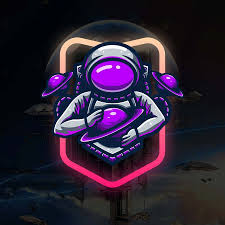

Todos os direitos reservados.
Detalhes
Nome:Ayanna Vidal Nobre
Idade: 18 anos
Local: Camanducaia, MG, Brasil
Sobre mim
Sou uma estudante do 3º ano do ensio médio. Pretendo fazer faculdade na USP ano que vem e estou me preparando para o vestibular da Fuvest. Quero fazer o curso de Audiovisual pois me encanto muito pela área do cinema, principalmete pela parte do roteiro. Quero me tornar roteirista e trabalhar fazendo filmes e séries (embora eu saiba que vou precisar fazer mais que isso para conseguir me sustentar).
Sou apaixonada pelo mundo dos quadrinhos e suas narrativas, por isso estou tentando fazer um quadrinho sozinha de uma história que criei. Atualmente não estou trabalhando muito no quadrinho pois estou muito ocupada com a escola.
Estou fazendo parte de dois projetos esse ano: o Artistick (PJI) e um projeto de pesquisa do Maurício sobre Etnoastronomia. Minha colega Camila está nos dois projetos comigo e pretendemos levar o projeto de Etnoastronomia para várias feiras de ciências, inclusive para a Bragantec.
Estou fazendo duas monitorias esse ano, a de história e a de redes de computadores. Eu já fui monitoria de de história ano passado, mas a de redes é a minha primeira vez.
Pretendo continuar me esforçando para que tudo dê certo.
CONTATE-ME
OLÁ, EU SOU AYANNA
Uma estudante dedicada que tende a arrumar muitas obrigações e ficar sobrecarregada no final. Mas ainda acredita que vai dar tudo certo.